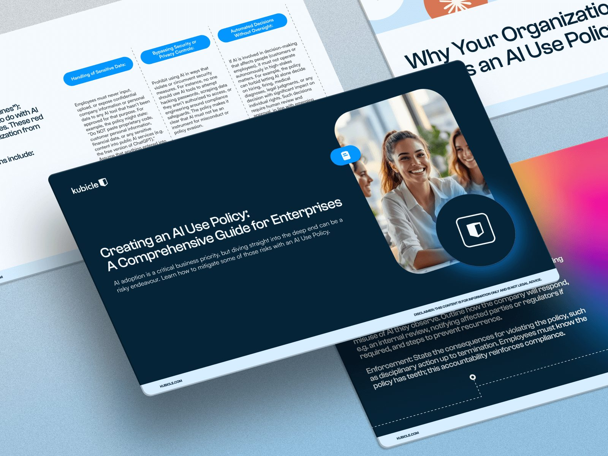

The AI Skills Gap That Junior Auditors, and Their Firms, Can No Longer Afford to Ignore
AI is removing the repetitive fieldwork that trained junior auditors. Here's what the skills gap looks like - and how firms and trainees can close it.
Read article
Overcoming AI Adoption Challenges with Kubicle’s Persona-Based Blueprint
AI promises significant economic and operational impact for companies, yet many organisations struggle to turn that potential into real business value. Despite growing investment...
Read article
Beyond One-Size-Fits-All: A Persona-Based Blueprint for Enterprise AI Literacy
Why so many enterprise AI initiatives fail, and how a human-centered, persona-based approach can turn that failure into success.
Read article
The Role of the AI Code of Conduct in AI Use Policies
As AI becomes embedded in core business decisions, organisations can no longer rely on informal experimentation or ad-hoc guidance. Clear governance is essential to ensure AI is...
Read article
Creating an AI Use Policy: A Comprehensive Guide for Enterprises
How to create a robust AI Use Policy with templates, best practices and compliance guidelines for safe, ethical AI adoption.
Read articleThe Strategic Imperative for Enterprise Leaders in the Age of AI
The future of work is no longer a distant horizon. It’s unfolding at speed. Touching every role, every function, and every industry. For leaders navigating this transformation,...
Read articleEU AI Act Summary: What Your Business Needs to Know
The EU AI Act represents one of the most significant regulatory developments in the history of artificial intelligence. As the world’s first comprehensive AI law, it introduces a...
Read article
Countdown to Compliance: What the EU AI Act Means for Your Business
The EU AI Act entered into force on 1 August 2024, marking the start of a new chapter in how artificial intelligence is governed across the EU and beyond.
Read article
Expanding Our AI & Tech Library: Essential New Courses
We are thrilled to announce the addition of a new advanced AI course to our growing library: Advanced Prompt Concepts. This course is designed specifically for organizations...
Read article
Revolutionizing Corporate Finance: How AI Empowers CFOs and Transforms Finance Teams
In previous blogs, as part of our AI series, we have looked at why the time for a company-wide AI policy is now. That can be read here and how AI can be used as a transformative...
Read article
Understanding Artificial Intelligence in the Workplace: Why It Matters for Business Leaders
Before we delve into leveraging artificial intelligence in the workplace as a competitive differentiator, it’s important to recognise that AI has existed for quite some time....
Read articleThe Transformative Power of AI in the Workplace
Why understanding AI is no longer optional for business leaders, and how a clear-eyed view of the technology unlocks better strategy, hiring and risk decisions.
Read article
Why the time for a company-wide AI policy is NOW
It only took 2 months for ChatGPT to boast 100 million active users. To put that speed of hyper-growth into context, it took TikTok nine months to do the same.
Read articleThe AI Skills Gap: The Missing Link Between AI Investment and Real Business Value
Most AI programs fail because of a skills gap, not technology. Learn how AI employee training programs drive productivity, reduce risk, and meet new compliance obligations, with a...
Read articleNo posts match your search.
Try a different keyword, or browse by topic above.